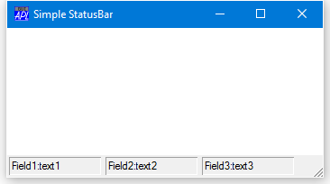
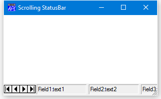
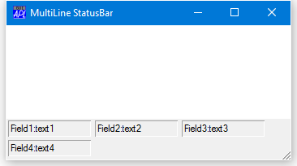
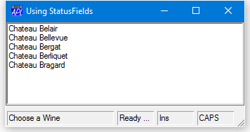

The StatusBar Object
Like the Toolbar, the StatusBar object is also a container that manages its children. However, the StatusBar may contain only one type of object, namely StatusFields. By default, the StatusBar is a flat grey object, positioned along the bottom edge of a Form, upon which the StatusFields are drawn as sunken rectangles. StatusFields display textual information and are typically used for help messages and for monitoring the status of an application. They can also be used to automatically report the status of the Caps Lock, Num Lock, Scroll Lock, and Insert keys
The following example illustrates a default StatusBar containing three StatusFields. The StatusFields are positioned automatically.
'TEST'⎕WC'Form' 'Simple StatusBar'
'TEST' ⎕WS'BCol' (255 255 255)
'TEST.SB'⎕WC'StatusBar'
'TEST.SB.S1'⎕WC'StatusField' 'Field1:' 'text1'
'TEST.SB.S2'⎕WC'StatusField' 'Field2:' 'text2'
'TEST.SB.S3'⎕WC'StatusField' 'Field3:' 'text3'
A Default StatusBar
The following example illustrates a scrolling StatusBar. The fourth StatusField extends beyond the right edge of the StatusBar and, because HScroll is ¯2, a mini scrollbar appears.
'TEST'⎕WC'Form' 'Scrolling StatusBar'
('BCol' (255 255 255))
'TEST.SB'⎕WC'StatusBar'('HScroll' ¯2)
'TEST.SB.S1'⎕WC'StatusField' 'Field1:' 'text1'
'TEST.SB.S2'⎕WC'StatusField' 'Field2:' 'text2'
'TEST.SB.S3'⎕WC'StatusField' 'Field3:' 'text3'
'TEST.SB.S4'⎕WC'StatusField' 'Field4:' 'text4'
A Scrolling StatusBar
As an alternative to single-row scrolling StatusBar, you can have a multi-line one. Indeed, this is the default if you omit to specify HScroll. However, you do have to explicitly set the height of the StatusBar to accommodate the second row.
'TEST'⎕WC'Form' 'Multi Line StatusBar'
('BCol' (255 255 255))
'TEST.SB.S1'⎕WC'StatusField' 'Field1:' 'text1'
'TEST.SB.S2'⎕WC'StatusField' 'Field2:' 'text2'
'TEST.SB.S3'⎕WC'StatusField' 'Field3:' 'text3'
'TEST.SB.S4'⎕WC'StatusField' 'Field4:' 'text4'
A Multi-line StatusBar
Using StatusFields
There are basically three ways of using StatusFields. Firstly, you can display information in them directly from your program by setting their Caption and/or Text properties. For example, if you are executing a lengthy calculation, you may wish to display the word "Calculating ..." as the Caption of a StatusField and, as the calculations proceed, display (say) "Phase 1" followed in due course by "Phase 2", and so forth. You can also use StatusFields to display application messages, including warning and error messages, where the use of a MsgBox is inappropriate.
The second major use of a StatusField is to display hints which you do by setting the HintObj property of an object to the name of the StatusField. Used in this way, a StatusField automatically displays context sensitive help when the user places the mouse pointer over an object. This topic is described in Chapter 5.The third use of a Status Field is to monitor the status of the keyboard. This is achieved by setting its Style property to one of the following keywords:
| Keyword | Meaning |
|---|---|
| CapsLock | Monitors state of Caps Lock key |
| ScrollLock | Monitors state of Scroll Lock key |
| NumLock | Monitors state of Num Lock key |
| KeyMode | Monitors the keyboard mode (APL/ASCII) (Classic Edition only) |
| InsRep | Monitors the state of the Insert/Replace toggle key |
The following example illustrates different uses of the StatusField object. The first StatusField F.SB.S1 is used for context-sensitive help by making it the HintObj for the Form F. The second StatusField F.SB.S2 is simply used to display application status; in this case "Ready ...". The third and fourth StatusField objects monitor the status of the Insert and Caps Lock keys respectively. Whilst the Caps Lock, Num Lock, and Scroll Lock keys have a recognised state, the Insert key does not. Initially, APL sets the key to "Ins" and then toggles to and from "Rep" whenever the key is pressed. To discover which mode the keyboard is in, you should use ⎕WG to read the value of the Text property of the StatusField.
'F'⎕WC'Form' 'Using StatusFields'('Coord' 'Pixel')
'F.SB'⎕WC'StatusBar'
'F.SB.S1'⎕WC'StatusField'('Size'⍬ 150)
'F'⎕WS'HintObj' 'F.SB.S1'
'F.SB.S2'⎕WC'StatusField' 'Ready ...'
'F.SB.S3'⎕WC'StatusField'('Style' 'InsRep')('Size'⍬ 50)
'F.SB.S4'⎕WC'StatusField'('Style' 'CapsLock')('Size'⍬ 50)
'F.L'⎕WC'List'WINES(0 0)(F.Size×0.8 1)('Hint' 'Choose a Wine')